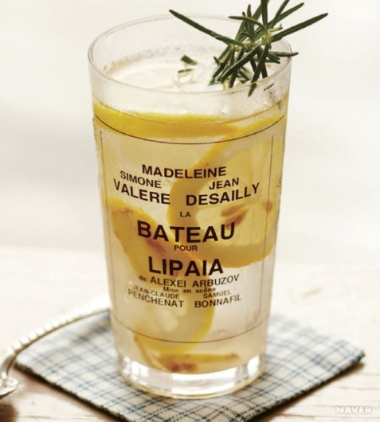

오늘은 감기에 좋은 차, 레몬생강차 만드는 법을 알아봅니다.
ㆍ얇게 썰은 생강 100g
ㆍ설탕 400g(4컵)
1.베이킹소다를 푼 물에 레몬을 30분정도 담갔다 꺼낸 다음 굵은 소금으로
문질러 왁스를 제거하고 깨끗한
물로 행군다.
2.손질한 레몬은 껍질쨰 슬라이스 한다.
3.생강은 꺠끗하게 씻어 껍질을 벗기고 슬라이스 한다.
4.깨끗한 불에 자른 레몬과 생강,설탕을 300g을 넣고 잘 썩는다.
5.미리 소독한
우리병에 넣고 그 위에
설탕을 100g을 올려
공기와의 접촉을 차단,3일정도 냉장 숙성시킨다.
ㆍ밀봉하여 냉장보관하면 6개월 동안 보관이 가능하다.
ㆍ찬 성질을 가지고 있어 감기로 인해 열이 날 떄 도움이 된다.
ㆍ근육을 건강하게 만들어주어 몸살감기에 좋다.